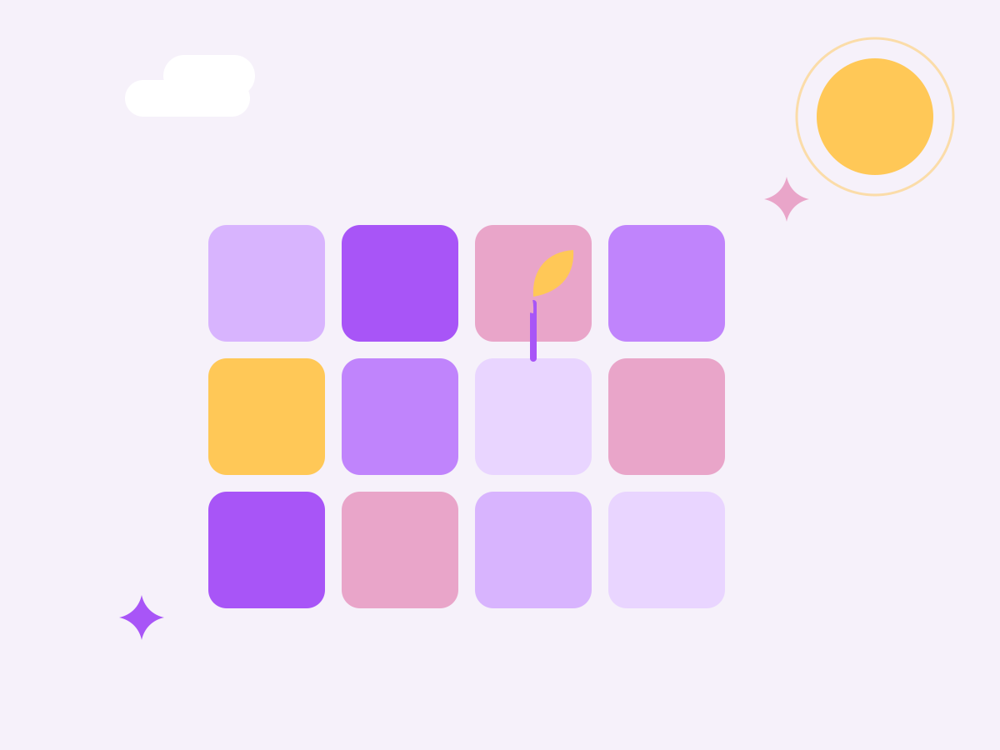

Stay curious
Ask why the light works before copying the preset. Curiosity is the whole method.
Graphics and photography, with a growing love for the web.
I'm a third-year student who designs visuals, shoots photos and is learning to build for the web with HTML, CSS, JavaScript and Bootstrap. This is where I keep the work that comes out of it.

Most of my week happens between design files and a camera: layouts, type, light and composition. The rest goes into learning how to put those visuals on a screen that actually works.
This page is my working portfolio — photo sets, poster studies and the small websites I build to practise. No agency polish, no pretending to know it all; just a third-year student showing the work and the process behind it.
More about meThe four things most of my days are built around.
Posters, layouts and type studies — learning to make a page feel balanced before I make it behave.
Natural light, everyday subjects and the discipline of noticing what everyone else walks past.
HTML, CSS, JavaScript and Bootstrap — the bridge between a design file and something you can actually scroll.
Still collecting skills — honest progress notes, failed drafts and all.
A third-year student working between graphics, photography and the web — here's the longer version.
My story starts with a borrowed camera and a stubborn habit of noticing things — the way light lands on a wall, the shape of a shadow, the odd beauty of an ordinary street.
Three years in, I've settled on graphics and photography: posters, layouts, photo sets, the slow work of composition. Alongside that I've been learning to build for the web — HTML, CSS, JavaScript and Bootstrap — because I want my visuals to live somewhere I made myself.
This site is part portfolio, part practice ground: photo series, design studies and the small pages I build to understand how layout behaves on a screen. If any of that resonates, we'll probably get along great.
— izrah
Ask why the light works before copying the preset. Curiosity is the whole method.
The best frames and layouts have a heartbeat — a story, a face, a reason.
Finished work impresses, but contact sheets and drafts teach. I try to show both.
One percent better, one page a day, one small win at a time. It adds up.
Updated whenever I remember — which is itself a work in progress.
Bootstrap components, JavaScript fundamentals, and how to read a histogram properly.
A photo series for class, a poster set, and this portfolio.
Photo essays, design annuals and anything with generous margins.
Lo-fi for editing, film scores for daydreams, everything else for the commute.
Graphics, photo sets and the pages I build while learning — some finished, all honest work in progress.
A photo series chasing the twenty minutes before sunset — warm light, long shadows and the same street shot four ways.
 Graphics
Graphics
A set of poster studies pairing heavy display type with paper texture, grain and a very small palette.
A responsive one-page portfolio built with Bootstrap 5 — my first project where the grid finally clicked.

PhotographyA black-and-white photo essay about the quiet corners of campus — stairwells, empty chairs, late light.
 Graphics
Graphics
Logo and identity sketches for imaginary small businesses — a bakery, a bike shop, a photo studio.
Small landing pages built to practise HTML, CSS and JavaScript — layout, hover states and a form that works.
The next batch of experiments, simmering slowly on the back burner.
Coursework, creative work and the detours that taught me the most — a short timeline of a third-year student.
Independent · Small briefs
Posters, social kits and photo coverage for classmates, student orgs and small businesses. I've learned that a clear brief, a sensible file name and a good export preset save more hours than any shortcut.
Student publication · Layout & visuals
Helped lay out pages, edit photos and keep a consistent look across issues. Where I learned grids, deadlines and how to take feedback without taking it personally.
Campus events · Coverage
Shot and edited event photos, then turned them into recap posts and posters. My first taste of working fast without losing the details.
Everyday frames · Phone & borrowed camera
Started carrying a camera everywhere, filling folders with light, shadows and unremarkable things that turned out to matter later.
College undergraduate · Graphics & photography
Most of my coursework leans visual: graphics, layout, photography and media production. The other half is web development — HTML, CSS, JavaScript and Bootstrap — where the design has to work on a real screen.
Self-study · Docs, courses & rabbit holes
My favorite classroom has no walls: official docs, community tutorials, open-source code and the occasional 2 a.m. deep dive that starts with "I'll just look this up quickly."
Posters, social kits and layouts that look intentional rather than assembled.
Responsive pages built with the basics — still learning, always improving.
Natural-light portraits, event coverage and edited sets ready to post or print.
Organised files, labelled exports and deadlines that get met.
A shoot, a design project, or a question about my work — I'd love to hear from you.
Usually within a couple of days — faster if you mention a deadline or a shoot date.
Fields marked with * are required. No newsletters, no spam — just me, replying.
A shoot, a poster, a small website — or just a friendly hello. My inbox is open between classes and my curiosity is always on.